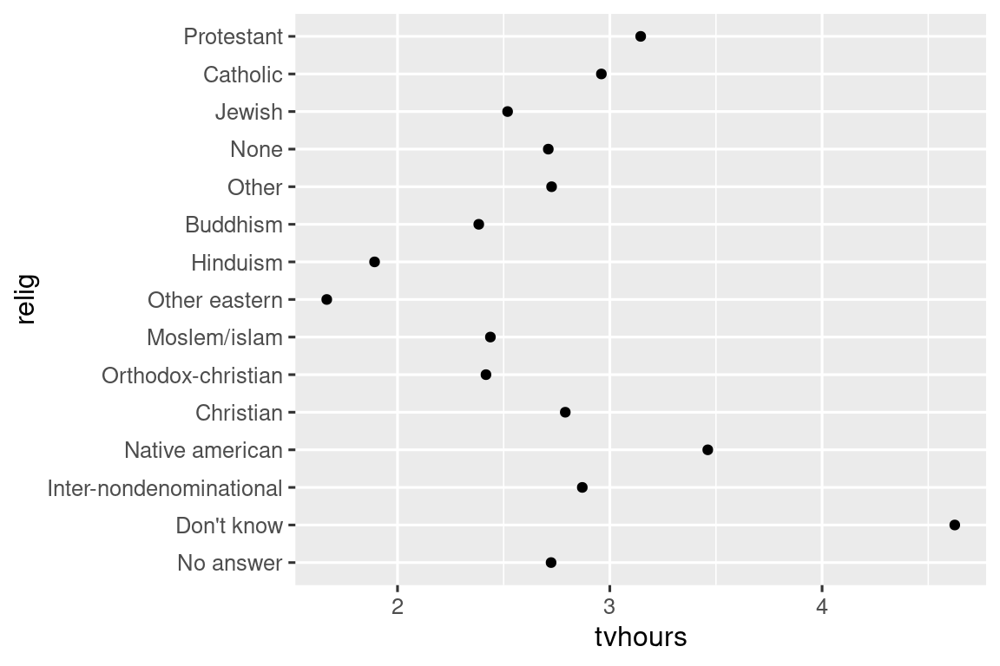
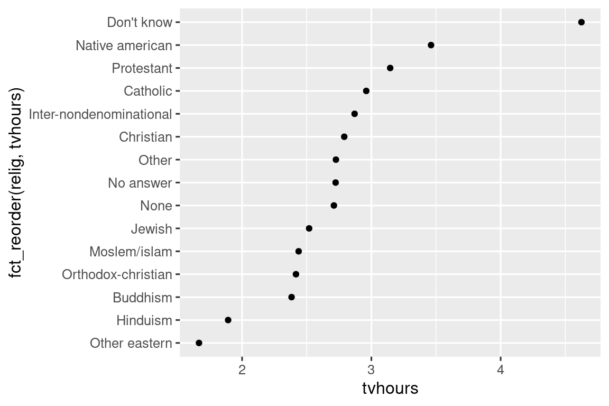
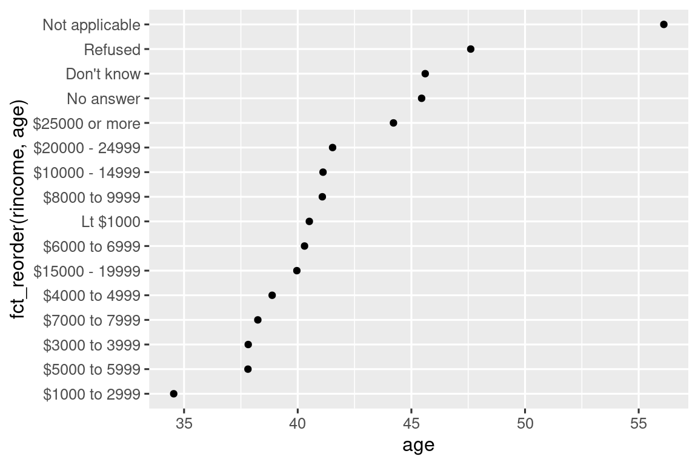
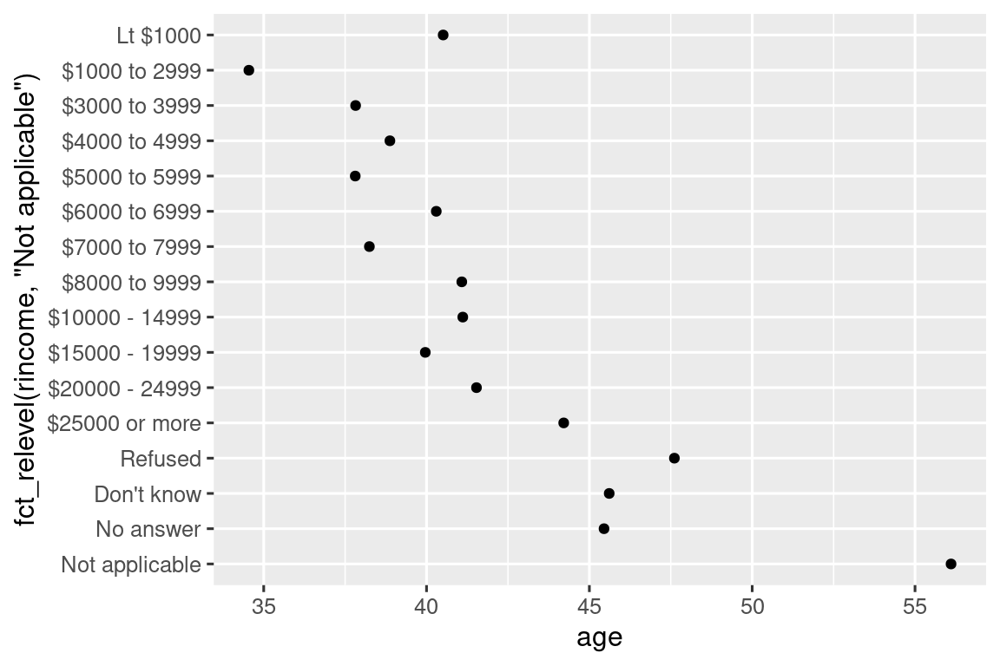
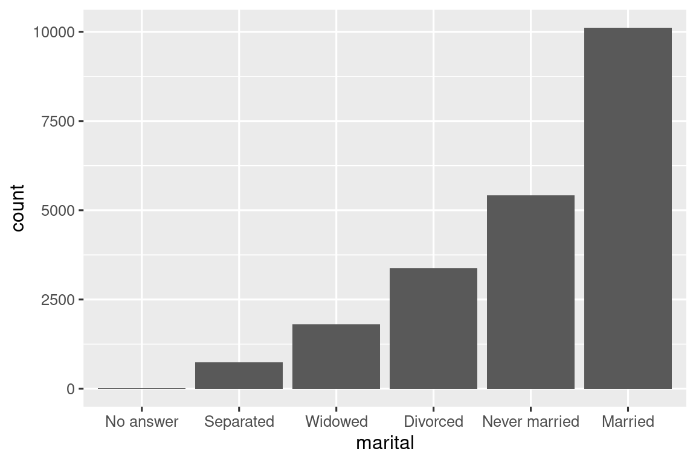

16 Παράγοντες
16.1 Εισαγωγή
Οι παράγοντες χρησιμοποιούνται για κατηγορικές μεταβλητές, μεταβλητές που έχουν ένα σταθερό και γνωστό σύνολο πιθανών τιμών. Είναι επίσης χρήσιμοι όταν θέλετε να εμφανίσετε διανύσματα χαρακτήρων με μία μη αλφαβητική σειρά.
Θα ξεκινήσουμε δίνοντας κίνητρα για τους λόγους που χρειάζονται στην ανάλυση δεδομένων1 και πώς μπορείτε να τους δημιουργήσετε με την factor(). Στη συνέχεια, θα σας παρουσιάσουμε το σύνολο δεδομένων gss_cat που περιέχει αρκετές κατηγορικές μεταβλητές για πειραματισμό. Στη συνέχεια, θα χρησιμοποιήσετε αυτό το σύνολο δεδομένων για να εξασκηθείτε στην τροποποίηση της σειράς και των τιμών των παραγόντων, προτού ολοκληρώσουμε τη συζήτηση για τους διατεταγμένους παράγοντες.
16.1.1 Προαπαιτούμενα
Το βασικό πακέτο λειτουργιών της R παρέχει μερικά εργαλεία για τη δημιουργία και τον χειρισμό παραγόντων. Θα τα συμπληρώσουμε με το πακέτο forcats, το οποίο αποτελεί μέρος του tidyverse. Παρέχει εργαλεία για την διαχείριση κατηγορικών μεταβλητών χρησιμοποιώντας ένα ευρύ φάσμα βοηθητικών συναρτήσεων για την εργασία με παράγοντες.
16.2 Βασικές αρχές παραγόντων
Φανταστείτε ότι έχετε μία μεταβλητή που καταγράφει έναν μήνα:
x1 <- c("Dec", "Apr", "Jan", "Mar")Η χρήση μιας συμβολοσειράς για την εγγραφή αυτής της μεταβλητής έχει δύο προβλήματα:
-
Υπάρχουν μόνο δώδεκα πιθανοί μήνες και τίποτα δεν σας γλυτώνει από τυπογραφικά λάθη:
x2 <- c("Dec", "Apr", "Jam", "Mar") -
Δεν ταξινομείται με χρήσιμο τρόπο:
sort(x1) #> [1] "Apr" "Dec" "Jan" "Mar"
Τα δύο αυτά προβλήματα διορθώνονται με έναν παράγοντα. Για να δημιουργήσετε έναν παράγοντα, πρέπει να ξεκινήσετε δημιουργώντας ένα διάνυσμα με έγκυρα επίπεδα:
month_levels <- c(
"Jan", "Feb", "Mar", "Apr", "May", "Jun",
"Jul", "Aug", "Sep", "Oct", "Nov", "Dec"
)Μπορείτε τώρα να δημιουργήσετε έναν παράγοντα:
Και οποιεσδήποτε τιμές δεν βρίσκονται στα επίπεδα, θα μετατραπούν σε NA χωρίς προειδοποίηση:
y2 <- factor(x2, levels = month_levels)
y2
#> [1] Dec Apr <NA> Mar
#> Levels: Jan Feb Mar Apr May Jun Jul Aug Sep Oct Nov DecΑυτό φαίνεται επικίνδυνο, επομένως μπορεί αντ’ αυτού να θέλετε να χρησιμοποιήσετε την forcats::fct():
y2 <- fct(x2, levels = month_levels)
#> Error in `fct()`:
#> ! All values of `x` must appear in `levels` or `na`
#> ℹ Missing level: "Jam"Εάν παραλείψετε τα επίπεδα, θα ληφθούν από τα δεδομένα με αλφαβητική σειρά:
factor(x1)
#> [1] Dec Apr Jan Mar
#> Levels: Apr Dec Jan MarΗ αλφαβητική ταξινόμηση είναι ελαφρώς επικίνδυνη, καθώς κάθε υπολογιστής δεν ταξινομεί συμβολοσειρές με τον ίδιο τρόπο. Η forcats::fct() ταξινομεί βάση της πρώτης εμφάνισης:
fct(x1)
#> [1] Dec Apr Jan Mar
#> Levels: Dec Apr Jan MarΕάν ποτέ χρειαστεί να αποκτήσετε απευθείας πρόσβαση στο σύνολο έγκυρων επιπέδων, μπορείτε να το κάνετε με την levels():
levels(y2)
#> [1] "Jan" "Feb" "Mar" "Apr" "May" "Jun" "Jul" "Aug" "Sep" "Oct" "Nov" "Dec"Μπορείτε επίσης να δημιουργήσετε έναν παράγοντα κατά την ανάγνωση των δεδομένων σας χρησιμοποιώντας το col_factor() στην readr:
csv <- "
month,value
Jan,12
Feb,56
Mar,12"
df <- read_csv(csv, col_types = cols(month = col_factor(month_levels)))
df$month
#> [1] Jan Feb Mar
#> Levels: Jan Feb Mar Apr May Jun Jul Aug Sep Oct Nov Dec16.4 Τροποποίηση σειράς παραγόντων
Είναι συχνά χρήσιμο να αλλάζετε τη σειρά των επιπέδων των παραγόντων σας σε μία απεικόνιση. Για παράδειγμα, φανταστείτε ότι θέλετε να εξερευνήσετε τον μέσο αριθμό ωρών παρακολούθησης τηλεόρασης ανά ημέρα ανάλογα με τη θρησκεία:
relig_summary <- gss_cat |>
group_by(relig) |>
summarize(
tvhours = mean(tvhours, na.rm = TRUE),
n = n()
)
ggplot(relig_summary, aes(x = tvhours, y = relig)) +
geom_point()
Το διάγραμμα αυτό είναι δύσκολο να διαβαστεί γιατί δεν υπάρχει κάποιο συνολικό μοτίβο. Μπορούμε να το βελτιώσουμε αναδιατάσσοντας τα επίπεδα της relig χρησιμοποιώντας την fct_reorder(). Η fct_reorder() παίρνει τρία ορίσματα:
-
.f, ο παράγοντας του οποίου τα επίπεδα θέλετε να τροποποιήσετε. -
.x, ένα αριθμητικό διάνυσμα που θέλετε να χρησιμοποιήσετε για να αναδιατάξετε τα επίπεδα. -
.fun, μία προαιρετική συνάρτηση που χρησιμοποιείται σε περιπτώσεις που υπάρχουν πολλές τιμές του.xγια κάθε τιμή του.f. Η προεπιλεγμένη τιμή είναιmedian.
ggplot(relig_summary, aes(x = tvhours, y = fct_reorder(relig, tvhours))) +
geom_point()
Η αναδιάταξη της θρησκείας καθιστά πολύ πιο εύκολο να δούμε ότι τα άτομα στην κατηγορία “Don’t know” παρακολουθούν πολύ περισσότερη τηλεόραση και ότι ο Ινδουισμός και οι άλλες ανατολικές θρησκείες παρακολουθούν πολύ λιγότερη.
Καθώς αρχίζετε να κάνετε πιο περίπλοκους μετασχηματισμούς, συνιστούμε να τους μετακινήσετε από την aes() σε μία ξεχωριστή mutate(). Για παράδειγμα, μπορείτε να ξαναγράψετε το παραπάνω διάγραμμα ως εξής:
relig_summary |>
mutate(
relig = fct_reorder(relig, tvhours)
) |>
ggplot(aes(x = tvhours, y = relig)) +
geom_point()Τι θα συμβεί αν δημιουργήσουμε ένα παρόμοιο διάγραμμα εξερευνώντας το πώς διαφέρει η μέση ηλικία ανάλογα με το επίπεδο δηλωθέντος εισοδήματος;
rincome_summary <- gss_cat |>
group_by(rincome) |>
summarize(
age = mean(age, na.rm = TRUE),
n = n()
)
ggplot(rincome_summary, aes(x = age, y = fct_reorder(rincome, age))) +
geom_point()
Εδώ, η αυθαίρετη αναδιάταξη των επιπέδων δεν είναι καλή ιδέα! Αυτό συμβαίνει επειδή η rincome έχει ήδη μία λογική κατάταξη με την οποία δεν πρέπει να εμπλακούμε. Κρατήστε την fct_reorder() για παράγοντες των οποίων τα επίπεδα ταξινομούνται αυθαίρετα.
Ωστόσο, είναι λογικό να βάλετε το “Not applicable” στις πρώτες θέσεις μαζί με άλλα ειδικά επίπεδα. Μπορείτε να χρησιμοποιήσετε την fct_relevel(). Χρειάζεται έναν παράγοντας, .f και, στη συνέχεια, οποιονδήποτε αριθμό επιπέδων που θέλετε να μετακινήσετε στην πρώτη θέση.
ggplot(rincome_summary, aes(x = age, y = fct_relevel(rincome, "Not applicable"))) +
geom_point()
Γιατί πιστεύετε ότι ο μέσος όρος ηλικίας για το “Not applicable” είναι τόσο υψηλός;
Όταν χρωματίζετε τις γραμμές σε ένα διάγραμμα, ένας άλλος τύπος αναδιάταξης είναι επίσης χρήσιμος. Η fct_reorder2(.f, .x, .y) αναδιατάσσει τον παράγοντα .f κατά τις τιμές του .y που σχετίζονται με τις μεγαλύτερες τιμές του .x. Αυτό καθιστά το διάγραμμα πιο ευανάγνωστο καθώς τα χρώματα της γραμμής στη δεξιά άκρη του διαγράμματος θα ευθυγραμμιστούν με το υπόμνημα.
by_age <- gss_cat |>
filter(!is.na(age)) |>
count(age, marital) |>
group_by(age) |>
mutate(
prop = n / sum(n)
)
ggplot(by_age, aes(x = age, y = prop, color = marital)) +
geom_line(linewidth = 1) +
scale_color_brewer(palette = "Set1")
ggplot(by_age, aes(x = age, y = prop, color = fct_reorder2(marital, age, prop))) +
geom_line(linewidth = 1) +
scale_color_brewer(palette = "Set1") +
labs(color = "marital") ![Ένα διάγραμμα γραμμών με την ηλικία στον άξονα των x και το ποσοστό στον άξονα των y. Υπάρχη μια γραμμή για κάθε κατηγορία οικογενειακής κατάστασης: no answer (καμία απάντηση), never married (δεν παντρεύτηκε ποτέ), separated (χωρισμένος/η), divorced (διαζευγμένος/η), widowed (χήρος/α), και married (παντρεμένος/η). Είναι λίγο δύσκολο να διαβάσετε το διάγραμμα, καθώς η σειρά του υπομνήματος δεν σχετίζεται με τις γραμμές στο διάγραμμα. Η αναδιάταξη του υπομνήματος διευκολύνει την κατανόηση του διαγράμματος, γιατί πλέον τα χρώματα του υπομνήματος ταιριάζουν με τη σειρά των γραμμών στη δεξιά πλευρά του διαγράμματος. Μπορείτε να δείτε μερικά αναμενώμενα μοτίβα: η αναλογή αυτών που δεν παντρεύτηκαν ποτέ μειώνεται σταδιακά με την ηλικία, ενώ οι παντρεμένοι δημιουργούν ένα ανάποδο σχήμα U και οι χήροι/ες ξεκινάνε λιγότεροι, αλλά αυξάνονται απότομα μετά την ηλικία των 60.](factors_files/figure-html/unnamed-chunk-21-1.png)
![Ένα διάγραμμα γραμμών με την ηλικία στον άξονα των x και το ποσοστό στον άξονα των y. Υπάρχη μια γραμμή για κάθε κατηγορία οικογενειακής κατάστασης: no answer (καμία απάντηση), never married (δεν παντρεύτηκε ποτέ), separated (χωρισμένος/η), divorced (διαζευγμένος/η), widowed (χήρος/α), και married (παντρεμένος/η). Είναι λίγο δύσκολο να διαβάσετε το διάγραμμα, καθώς η σειρά του υπομνήματος δεν σχετίζεται με τις γραμμές στο διάγραμμα. Η αναδιάταξη του υπομνήματος διευκολύνει την κατανόηση του διαγράμματος, γιατί πλέον τα χρώματα του υπομνήματος ταιριάζουν με τη σειρά των γραμμών στη δεξιά πλευρά του διαγράμματος. Μπορείτε να δείτε μερικά αναμενώμενα μοτίβα: η αναλογή αυτών που δεν παντρεύτηκαν ποτέ μειώνεται σταδιακά με την ηλικία, ενώ οι παντρεμένοι δημιουργούν ένα ανάποδο σχήμα U και οι χήροι/ες ξεκινάνε λιγότεροι, αλλά αυξάνονται απότομα μετά την ηλικία των 60.](factors_files/figure-html/unnamed-chunk-21-2.png)
Τέλος, για ραβδογράμματα, μπορείτε να χρησιμοποιήσετε την fct_infreq() για να ταξινομήσετε επίπεδα σε φθίνουσα συχνότητα: αυτός είναι ο απλούστερος τύπος αναδιάταξης, μιας και δεν χρειάζεται επιπλέον μεταβλητές. Συνδυάστε τη με την fct_rev() εάν θέλετε να διατάξετε τα δεδομένα με αυξανόμενη συχνότητα, έτσι ώστε στο ραβδόγραμμα οι μεγαλύτερες τιμές να βρίσκονται στα δεξιά και όχι στα αριστερά.
gss_cat |>
mutate(marital = marital |> fct_infreq() |> fct_rev()) |>
ggplot(aes(x = marital)) +
geom_bar()
16.4.1 Ασκήσεις
Υπάρχουν κάποιες υψηλές τιμές στην
tvhoursπου είναι ύποπτες. Είναι η μέση τιμή μία καλή επιλογή για σύνοψη;Για κάθε παράγοντα στο
gss_catπροσδιορίστε εάν η σειρά των επιπέδων είναι αυθαίρετη ή με βάση κάποια λογική.Γιατί η μετακίνηση του “Not applicable” στην αρχή των επιπέδων το μετακίνησε στο κάτω μέρος του διαγράμματος;
16.5 Τροποποίηση επιπέδων παραγόντων
Πιο ισχυρή διαδικασία από την αλλαγή της σειράς των επιπέδων είναι η αλλαγή των τιμών τους. Αυτό σας επιτρέπει να διευκρινίσετε τις ετικέτες προς δημοσίευση και να συμπτύξετε τα επίπεδα για πιο γενικές αναλύσεις. Το πιο γενικό και ισχυρό εργαλείο είναι η fct_recode(). Σας επιτρέπει να επανακωδικοποιήσετε ή να αλλάξετε την τιμή κάθε επιπέδου. Για παράδειγμα, πάρτε τη μεταβλητή partyid από το πλαίσιο δεδομένων gss_cat:
gss_cat |> count(partyid)
#> # A tibble: 10 × 2
#> partyid n
#> <fct> <int>
#> 1 No answer 154
#> 2 Don't know 1
#> 3 Other party 393
#> 4 Strong republican 2314
#> 5 Not str republican 3032
#> 6 Ind,near rep 1791
#> # ℹ 4 more rowsΤα επίπεδα είναι συνοπτικά και ασυνεπή. Ας τα αλλάξουμε ώστε να είναι μεγαλύτερα και ας χρησιμοποιήσουμε παράλληλη κατασκευή. Όπως και οι περισσότερες συναρτήσεις μετονομασίας και επανακωδικοποίησης στο tidyverse, οι νέες τιμές εμφανίζονται στα αριστερά και οι παλιές τιμές στα δεξιά:
gss_cat |>
mutate(
partyid = fct_recode(partyid,
"Republican, strong" = "Strong republican",
"Republican, weak" = "Not str republican",
"Independent, near rep" = "Ind,near rep",
"Independent, near dem" = "Ind,near dem",
"Democrat, weak" = "Not str democrat",
"Democrat, strong" = "Strong democrat"
)
) |>
count(partyid)
#> # A tibble: 10 × 2
#> partyid n
#> <fct> <int>
#> 1 No answer 154
#> 2 Don't know 1
#> 3 Other party 393
#> 4 Republican, strong 2314
#> 5 Republican, weak 3032
#> 6 Independent, near rep 1791
#> # ℹ 4 more rowsΗ fct_recode() θα αφήσει τα επίπεδα που δεν αναφέρονται ρητά ως έχουν, και θα σας προειδοποιήσει εάν κατά λάθος αναφερθείτε σε ένα επίπεδο που δεν υπάρχει.
Για να συνδυάσετε ομάδες, μπορείτε να αντιστοιχίσετε πολλά παλιά επίπεδα στο ίδιο νέο επίπεδο:
gss_cat |>
mutate(
partyid = fct_recode(partyid,
"Republican, strong" = "Strong republican",
"Republican, weak" = "Not str republican",
"Independent, near rep" = "Ind,near rep",
"Independent, near dem" = "Ind,near dem",
"Democrat, weak" = "Not str democrat",
"Democrat, strong" = "Strong democrat",
"Other" = "No answer",
"Other" = "Don't know",
"Other" = "Other party"
)
)Χρησιμοποιήστε αυτήν την τεχνική με προσοχή: εάν ομαδοποιήσετε κατηγορίες που είναι πραγματικά διαφορετικές, θα καταλήξετε με παραπλανητικά αποτελέσματα.
Εάν θέλετε να συμπτύξετε πολλά επίπεδα, η fct_collapse() είναι μία χρήσιμη παραλλαγή της fct_recode(). Για κάθε νέα μεταβλητή, μπορείτε να παρέχετε ένα διάνυσμα των παλιών επιπέδων:
gss_cat |>
mutate(
partyid = fct_collapse(partyid,
"other" = c("No answer", "Don't know", "Other party"),
"rep" = c("Strong republican", "Not str republican"),
"ind" = c("Ind,near rep", "Independent", "Ind,near dem"),
"dem" = c("Not str democrat", "Strong democrat")
)
) |>
count(partyid)
#> # A tibble: 4 × 2
#> partyid n
#> <fct> <int>
#> 1 other 548
#> 2 rep 5346
#> 3 ind 8409
#> 4 dem 7180Μερικές φορές θέλετε απλώς να συγκεντρώσετε τις μικρές ομάδες για να κάνετε ένα διάγραμμα ή έναν πίνακα πιο απλό. Αυτή είναι η δουλειά της οικογένειας συναρτήσεων fct_lump_*(). Η fct_lump_lowfreq() είναι ένα απλό σημείο εκκίνησης που συγκεντρώνει σταδιακά τις μικρότερες κατηγορίες ομάδων στην κατηγορία “Other”, διατηρώντας πάντα την “Other” ως τη μικρότερη κατηγορία.
gss_cat |>
mutate(relig = fct_lump_lowfreq(relig)) |>
count(relig)
#> # A tibble: 2 × 2
#> relig n
#> <fct> <int>
#> 1 Protestant 10846
#> 2 Other 10637Σε αυτήν την περίπτωση, δεν είναι πολύ χρήσιμο: είναι αλήθεια ότι η πλειοψηφία των Αμερικανών σε αυτήν την έρευνα είναι Προτεστάντες, αλλά μάλλον θα θέλαμε να δούμε περισσότερες λεπτομέρειες! Αντίθετα, μπορούμε να χρησιμοποιήσουμε την fct_lump_n() για να καθορίσουμε ότι θέλουμε ακριβώς 10 ομάδες:
gss_cat |>
mutate(relig = fct_lump_n(relig, n = 10)) |>
count(relig, sort = TRUE)
#> # A tibble: 10 × 2
#> relig n
#> <fct> <int>
#> 1 Protestant 10846
#> 2 Catholic 5124
#> 3 None 3523
#> 4 Christian 689
#> 5 Other 458
#> 6 Jewish 388
#> # ℹ 4 more rowsΔιαβάστε τις οδηγίες για να μάθετε για τις fct_lump_min() και fct_lump_prop() οι οποίες είναι χρήσιμες σε άλλες περιπτώσεις.
16.5.1 Ασκήσεις
Πώς έχουν αλλάξει οι αναλογίες των ατόμων που ταυτίζονται ως Δημοκρατικοί, Ρεπουμπλικάνοι και Ανεξάρτητοι με την πάροδο του χρόνου;
Πώς θα μπορούσατε να συμπτύξετε την
rincomeσε ένα μικρό σύνολο κατηγοριών;Παρατηρήστε ότι υπάρχουν 9 ομάδες (εκτός της other) στο παραπάνω παράδειγμα
fct_lump. Γιατί όχι 10;
(Συμβουλή: εκτελέστε?fct_lumpκαι βρείτε ότι η προεπιλεγμένη τιμή του ορίσματοςother_levelείναι “Other”.)
16.6 Διατεταγμένοι παράγοντες
Πριν συνεχίσουμε, υπάρχει ένας ειδικός τύπος παραγόντων που πρέπει να αναφερθεί εν συντομία: οι διατεταγμένοι παράγοντες. Οι διατεταγμένοι παράγοντες, που δημιουργούνται με την ordered(), συνεπάγονται μία αυστηρή ταξινόμηση με ίση απόσταση μεταξύ των επιπέδων τους: το πρώτο επίπεδο είναι «μικρότερο» από το δεύτερο επίπεδο κατά το ίδιο ποσό που το δεύτερο επίπεδο είναι «μικρότερο από» το τρίτο επίπεδο, και ούτω καθεξής. Μπορείτε να τα αναγνωρίσετε κατά την εκτύπωση επειδή χρησιμοποιούν < μεταξύ των επιπέδων:
Στην πράξη, οι παράγοντες της ordered() συμπεριφέρονται πολύ παρόμοια με τους κανονικούς παράγοντες. Υπάρχουν μόνο δύο μέρη όπου μπορεί να παρατηρήσετε διαφορετική συμπεριφορά:
- Εάν χρησιμοποιήσετε έναν διατεταγμένο παράγοντα για να χρωματίσετε ή να γεμίσετε σχήματα στο πακέτο ggplot2, από προεπιλογή θα πάρει την τιμή
scale_color_viridis()/scale_fill_viridis(), η οποία είναι μία χρωματική κλίμακα που υποδηλώνει μία κατάταξη. - Εάν χρησιμοποιείτε μία διατεταγμένη συνάρτηση σε ένα γραμμικό μοντέλο, θα χρησιμοποιήσει “πολυγωνικές αντιθέσεις”. Είναι σχετικά χρήσιμες, αλλά είναι απίθανο να έχετε ακούσει για αυτές, εκτός και αν έχετε διδακτορικό στη Στατιστική, και ακόμα και τότε πιθανότατα δεν τις ερμηνεύετε συχνά. Αν θέλετε να μάθετε περισσότερα, προτείνουμε το
vignette("contrasts", package = "faux")από τη Lisa DeBruine.
Δεδομένης της αμφισβητούμενης χρησιμότητας αυτών των διαφορών, δεν συνιστούμε γενικά τη χρήση διατεταγμένων παραγόντων.
16.7 Σύνοψη
Αυτό το κεφάλαιο σας παρουσίασε το εύχρηστο πακέτο forcats για την εργασία με παράγοντες, εισάγοντας σας στις πιο συχνά χρησιμοποιούμενες αντίστοιχες συναρτήσεις. Το forcats περιέχει αρκετές άλλων βοηθητικές συναρτήσεις που δεν είχαμε χώρο να συζητήσουμε εδώ, επομένως κάθε φορά που αντιμετωπίζετε μία πρόκληση ανάλυσης παραγόντων που δεν έχετε αντιμετωπίσει στο παρελθόν, συνιστώ ανεπιφύλακτα να διαβάσετε το reference index για να ελέγξετε εάν υπάρχει κάποια συνάρτηση που μπορεί να σας βοηθήσει να λύσετε το πρόβλημά σας.
Εάν θέλετε να μάθετε περισσότερα σχετικά με τους παράγοντες μετά την ανάγνωση αυτού του κεφαλαίου, σας συνιστούμε να διαβάσετε την εργασία της Amelia McNamara και του Nicholas Horton, Wrangling categorical data in R. Αυτό το άρθρο παρουσιάζει μέρος της ιστορίας που συζητήθηκε στα stringsAsFactors: An unautorized biography και stringsAsFactors = <sigh> και συγκρίνει τις tidy προσεγγίσεις των κατηγορικών δεδομένων που περιγράφονται σε αυτό το βιβλίο με τις μεθόδους του βασικού συνόλου λειτουργιών της R. Μία αρχική έκδοση αυτού του άρθρου συνέβαλε ως κίνητρο και προεργασία για το πακέτο forcats. Ευχαριστώ Amelia & Nick!
Στο επόμενο κεφάλαιο θα αλλάξουμε ταχύτητα για να αρχίσουμε να μαθαίνουμε για τις ημερομηνίες και ώρες στην R. Οι ημερομηνίες και οι ώρες φαίνονται παραπλανητικά απλές, αλλά όπως θα δείτε σύντομα, όσο περισσότερα μαθαίνετε γι’ αυτές, τόσο πιο περίπλοκες φαίνονται!
Είναι επίσης ιδιαίτερα σημαντικοί για την μοντελοποίηση.↩︎